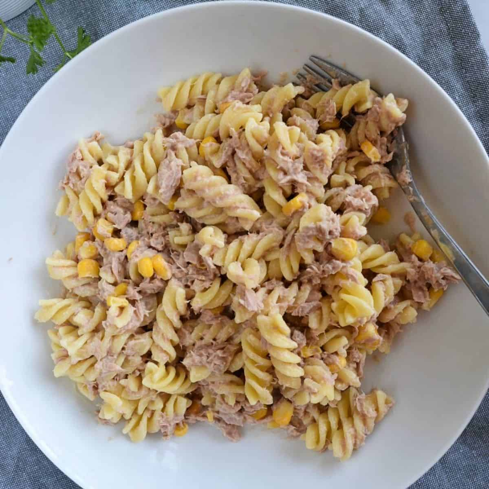

Tuna Pasta

Description
Enjoy this creamy, tuna pasta in just a couple of minutes!
Guaranteed to hit that creamy spot! Yum!
Ingredients
- 1 Can of Tuna (drained)
- 50g Mayonnaise
- Penne Pasta (amount optional)
- Sweetcorn (optional)
Steps
- Heat a saucepan of water on a medium heat.
- When the water begins to boil, add the pasta.
- Empty the can of tuna into a small bowl.
- Add the mayonnaise to the bowl.
- With a fork or spoon, mix the tuna and mayonnaise together until it makes a creamy texture.
- When the pasta is cooked to your preference, drain and add to the tuna mayonnaise.
- Mix all ingredients in the bowl together.
- Add sweetcorn if you fancy and then serve! Bon appetit!
Click here to return to the recipes list!